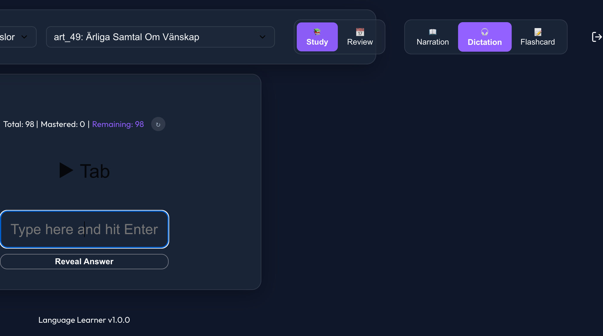
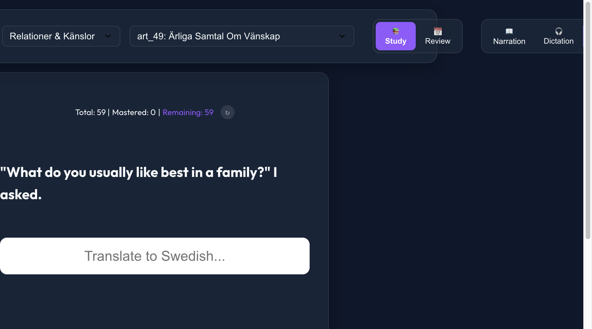

Say goodbye to rote memorization! Language Learner is an immersive platform designed specifically for SFI (Swedish for Immigrants) students. Seamlessly combining reading, dictation, and smart flashcards to help you break through language barriers fast.
Start Learning NowStruggling to understand native Swedish speakers? Rapidly improve your listening comprehension and spelling through sentence-by-sentence dictation at native speeds. Our system instantly corrects your mistakes with highlighted feedback.

Ditch isolated word lists! We utilize the state-of-the-art FSRS spaced repetition algorithm while keeping the original Swedish sentence where you first encountered the word. Reviewing in context ensures stronger, longer-lasting memory.
